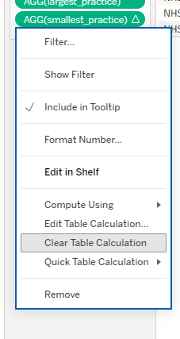
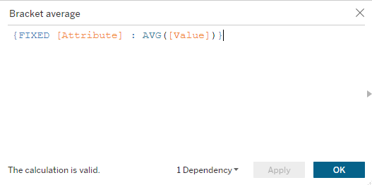
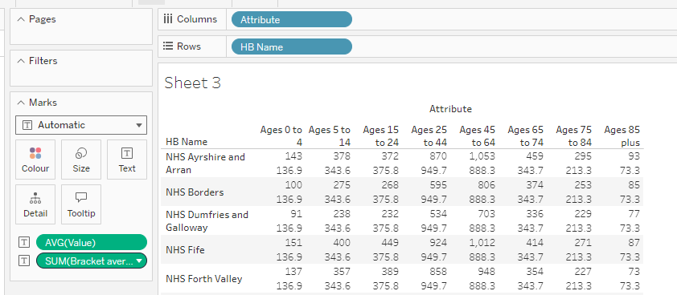

No feedback found for this session
Tableau for Beginners (session 4)
Tableau
beginner
Warning
This is currently a draft version of the materials for this training session, and so may contain minor errors and inaccuracies.
Session outline
- In this session, we’re going to build out the GP practice size dashboard from last time
- we’re going to use some new features of Tableau to help us with that
- Calculated Fields
- Table calculations
- Level of Detail (LOD) expressions
Session files
- four .csv files
1 - practices.csvfrom PHS’s opendata portal2 - boards.csvrom PHS’s opendata portal3b - demographics_p.csvpivoted data from PHS’s opendata portal4 - postcodes.csvfrom the Scottish Postcode Directory - although note that the supplied file is a small subset of this larger directory
Getting started
Task
- find your dashboard from last time
- or create a new dashboard based on the following four data sources for this week

- or create a new dashboard based on the following four data sources for this week
- create a new, empty, worksheet
Calculated Fields
- Calculated Fields are the basic tool used to summarize data in Tableau
- let’s start with a simple example: how big is the largest GP practice?
- we’ll answer that by writing a simple formula:
MAX([Practice List Size])MAXis a function that finds the largest value in some data[Practice List Size]refers to one of our columns of data
MAX()
Task
- right-click your
Practice List Sizefield, and selectCreate > Calculated Field...
- name your Calculated Field
largest_practice - then use the following (case sensitive) formula to calculate the largest practice:
MAX([Practice List Size])

Finding your calculated fields
- note that your new
largest_practicefield will show up at the very bottom of your sets of data:
- note too the equals sign in the icon, indicating a calculated field
MIN()
Task
- now repeat to find the smallest practice using
MIN()
COUNT()
Task
- now repeat to find the number of practices using
COUNT()
AVG()
Task
- finally, find the average practice size using
AVG()
Adding calculated fields to worksheets
Task
Drag any one of your new calculated fields to Text Marks, then add
HB Nameto the column shelf:
then (in a slightly quirky way) you should be able to add each calculation by double-clicking the name of the calculated field:

Finding functions
- from the right-click menu, you can edit calculations

- note that the right-hand edge of the calculation interface contains a mini help section for the available functions

Combining functions
- we can use several functions in a formula to do interesting analytic work
- we’ll look at three helpers for combining functions:
- brackets
+STR()
Brackets
- you can combine several functions together with brackets
- the functions will run from the inside-out:
ROUND(AVG([dat]))will:- average
[dat], then - round that result
- average
Task
- try making a rounded average of practice list size to the nearest 100
ROUND(AVG([Practice List Size]), -2)
+
+joins text values together
Task
- create a new sheet with
HB Nameon theRowsshelf - then create a new calculation with the formula
"The first practice name is " + MIN([GP Practice Name]) - add that calcuation to
Text Marks - you may need to play with the
Fitmenu to see your results:

STR()
- if you try to use
+to add text to numeric calculations, you’ll run into a problem STR()converts numbers to text
Task
- try
"The smallest practice has " + STR(MIN([Practice List Size])) + " patients"
IF and friends
IF something THEN action1 ELSE action2 ENDELSEIF something else THEN action2IFF(something, action1, action2)
Table calculations
- Table calculations are calculations on visualizations, rather than the underlying data
- We’ll run through a quick table calculation now
Quick table calculations
Task
- build a new sheet with largest and smallest practices by board

- right-click your largest_practice calculation, and select
Quick Table Calculation > Rank
- that converts largest_practice to display as a rank between 1 and 14
- clear the table calculations from the right-click menu:

Level of detail calculations
- LoD calculations allow you to control the level of detail that your calculations work at
- this is just a taster as this gets into advanced (and messy) territory pretty fast
Task
- create a table showing the average of each demographic group per NHS board:

- now add a LoD calculation that will show the average for each attribute bracket for Scotland overall using
{FIXED [Attribute] : AVG([Value])}:

That gives us a slightly messy way of benchmarking our average for our bracket within a board to the bracket nationally:

We could also try the more ambitious:
AVG([Value]) / ATTR({FIXED [Attribute] : AVG([Value])})
(you need the ATTR function to trick Tableau into mixing and matching these different values)